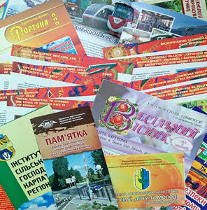

Оперативний цифровий друк – це:

-
мінімальний тираж – 1 примірник;
-
роздрук пробного екземпляру перед друком тиражу;
-
можливість внесення фінальних змін в електронний макет;
-
використання різних матеріалів: крейдований (глянцевий, матовий)
та офсетний папери, дизайнерський картон, самоклейка тощо.
Видавництво «ПАІС» пропонує якісний оперативний повноколірний цифровий друк на машині Xerox С60, яка друкує з
роздільною здатністю 2400х2400 dpi на папері щільністю від 64 г/м2 до 300 г/м2.
-
друкуємо:
– візитки, бейджі;
– фірмові бланки;
– календарі, стікери та наклейки;
– оголошення, афіші, постери, плакати;
– листівки, флаєри, вітальні відкритки, запрошення;
– буклети, альбоми, каталоги, програми заходів;
– подяки, дипломи, сертифікати, грамоти;
-
виготовляємо записники та папки;
-
виконуємо палітурні роботи.
Гарантуємо якість, оперативність та помірні ціни на цифровий друк.
Ми враховуємо міркування, побажання та вимоги щодо термінів роботи, водночас не нехтуючи її результатами: за
потреби професійно допрацюємо макет, виправимо недоліки чи порадимо, як це можна зробити.